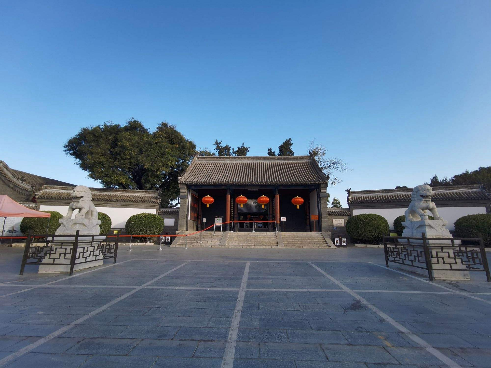

直隶总督府

直隶总督署，又称直隶总督部院，位于河北省保定市莲池区裕华路301号，占地30000平方米，是中国保存完整的一所清代省级衙署。原建筑始建于元，明初为保定府衙，明永乐年间改做大宁都司署，清初又改作参将署。清雍正八年（1730年）经过大规模的扩建后正式建立总督署，历经雍正、乾隆、嘉庆、道光、咸丰、同治、光绪、宣统八帝，可谓是清王朝历史的缩影。 [11]
直隶总督署坐北朝南，为小式硬山建筑，具有典型的北方衙署建筑风格。其格局是严格按照清朝关于省级衙署的规制修建的，为前朝后寝的格局。整座建筑群分为东路、中路和西路三个组成部分，各路均为多进四合院格局，类似北京的故宫。中、东、西三路主次分明。中路建筑为衙署主体部分，由五进四合院组成，各院正房均建筑在南北向的中轴线上，两侧配以左右耳房、厢房等。整体布局自南向北依次是大门、仪门院、公生明牌坊、大堂院、二堂院、官邸院、上房院，这些建筑均保存完好。 [5] [9] 直隶总督署平面布局严谨，采用中轴对称布局。建筑空间体量广阔，庭院规整迭进，等级界限明显。 [11] 直隶总督署共有直隶总督共74人99任次， [9] 如曾国藩、李鸿章、袁世凯、方观承等。清宣统三年（1911年），直隶总督废除。 [4] 直隶总督署有“一座总督衙署，半部清史写照”之称。 [10]